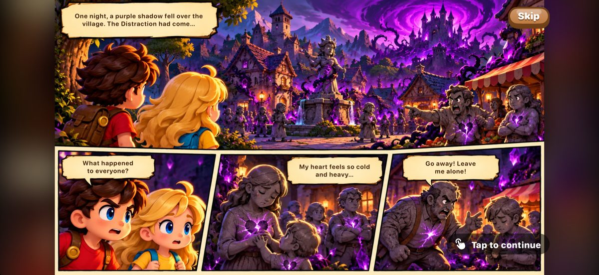

Piki and Max are a sister and brother on an adventure to find the Book of Light. Run, jump and use Piki's ice and Max's fire through five storybook worlds, on your own or together with a friend.
Free to try: Level 1 is free. Unlock the whole adventure with one purchase. No ads.



- Five worlds and five bosses: a sunny valley, a deep forest, golden desert ruins, a frozen summit and the Shadow Keep.
- Ice and fire: Piki freezes water into bridges, Max burns through vines.
- Play together: Duo on one device with a game controller, or Nearby on two iPhones.
- Made for families: an easier Explorer mode, a comic-book story, and a Bible verse to collect after each level.
- Game Center achievements and leaderboards, and progress that syncs with iCloud.